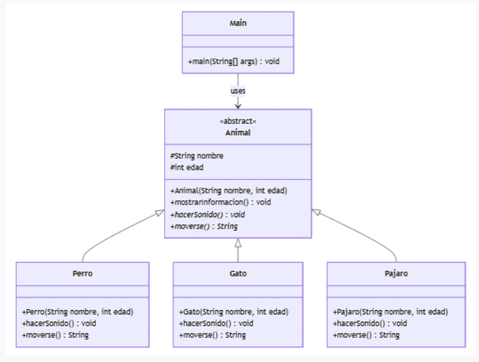

Ejercicio 12: Clases Abstractas y Herencia
Enunciado
Implementa el siguiente diagrama de clases en Java:

Solución
En este ejercicio practicamos el concepto de clases abstractas. La clase Animal actúa como una base que define atributos comunes y métodos que toda subclase debe implementar (hacerSonido y moverse), pero no permite ser instanciada directamente.
1. Clase Abstracta Animal
package Tema5.Ejercicios.ejercicio12;
public abstract class Animal {
protected String nombre;
protected int edad;
public Animal(String nombre, int edad) {
this.nombre = nombre;
this.edad = edad;
}
public void mostrarInformacion() {
System.out.println("Nombre: " + nombre + ", Edad: " + edad);
}
// Métodos abstractos que obligan a las hijas a implementarlos
public abstract void hacerSonido();
public abstract String moverse();
}2. Implementaciones Concretas
Cada una de estas clases extiende de Animal y proporciona la lógica específica para sus métodos abstractos.
package Tema5.Ejercicios.ejercicio12;
public class Perro extends Animal {
public Perro(String nombre, int edad) {
super(nombre, edad);
}
@Override
public void hacerSonido() {
System.out.println("El perro dice: ¡Guau guau!");
}
@Override
public String moverse() {
return "El perro corre por el jardín.";
}
}package Tema5.Ejercicios.ejercicio12;
public class Gato extends Animal {
public Gato(String nombre, int edad) {
super(nombre, edad);
}
@Override
public void hacerSonido() {
System.out.println("El gato dice: ¡Miau!");
}
@Override
public String moverse() {
return "El gato camina sigilosamente.";
}
}package Tema5.Ejercicios.ejercicio12;
public class Pajaro extends Animal {
public Pajaro(String nombre, int edad) {
super(nombre, edad);
}
@Override
public void hacerSonido() {
System.out.println("El pájaro dice: ¡Pío pío!");
}
@Override
public String moverse() {
return "El pájaro vuela por el cielo.";
}
}3. Clase Principal (Main)
Probamos la jerarquía instanciando los objetos y utilizando polimorfismo a través de referencias de tipo Animal.
package Tema5.Ejercicios.ejercicio12;
public class Main {
public static void main(String[] args) {
Animal miPerro = new Perro("Firulais", 5);
Animal miGato = new Gato("Michi", 3);
Animal miPajaro = new Pajaro("Tweety", 1);
// Probar el perro
miPerro.mostrarInformacion();
miPerro.hacerSonido();
System.out.println(miPerro.moverse());
System.out.println("--------------------");
// Probar el gato
miGato.mostrarInformacion();
miGato.hacerSonido();
System.out.println(miGato.moverse());
System.out.println("--------------------");
// Probar el pajaro
miPajaro.mostrarInformacion();
miPajaro.hacerSonido();
System.out.println(miPajaro.moverse());
}
}